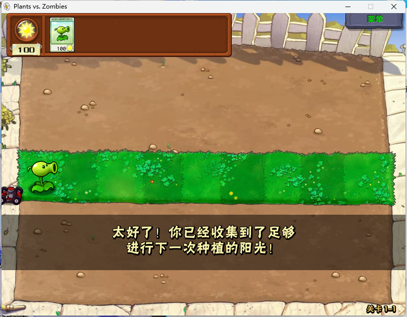

生活中变量与常量
生活中会遇到很多量：一件商品的价格、每个月的生活费……这些量可以被分为两类：常量和变量。
- 什么是常量？
顾名思义，一个常数、一个不变化的量，我们最熟悉的常量就是PAI、自然对数e。 - 什么是变量？
同样是顾名思义，一个变化的量就是变量。 - 常量大家都可以理解，可变量未必理解得容易，这里我们以《植物大战僵尸》为例。

在上图中，我们拥有100阳光，而一株豌豆的阳光价格为100。
对于阳光，我们所持有的阳光数量会随着我们对阳光的获取和消耗变化，这就是变量。
与此同时，豌豆的价格却始终是100，这就是一个常量。
C语言中的变量与常量
生活中的变量和常量我们已经了解，那么C语言中的呢？
在C语言中，对应一个量而言，我们可以对其进行声明和定义两类操作。任何一个量，它的初始化，也就是声明都是必不可少的。这也就意味着，如果你没有对其进行定义，系统会随机对其定义一个值。
一个不变化的变量可以发挥常量的作用，可一个常量却不能随意变化，为了便于学习，我们在本节只介绍变量。
C语言中变量的声明
在最开始我们介绍C程序时，我们说过一句话“int被称为关键字，其作用是指定义main函数返回值的类型为int型，int型即整型，暂且可以将其等价于整数”，当时你可能对这句话不太理解，没关系当我们介绍完变量的声明后，你就会明白。
首先我们必须要理解为什么要声明变量，在C语言中会有很多字符，如果我们不声明一个字符，我们就无法判定这个字符是一个变量名，更别说它的类型了。
敏锐的读者会注意到上述文字中的两个关键点，变量名和变量的类型
变量名的命名规范与艺术
如同人有名字一样，每一个变量也有着它的名字，作为程序员的我们，就像变量的父母一样，拥有着给它们取名的权利。同样，正如现实生活中取名字有一定规范一样，我们给变量取名也要遵循一定的规则，具体规则如下：
- 变量名的开头必须为字母或下划线，大小写均可；
- 变量名中不可以有符号，但是可以有下划线，也就是“_”；
- 变量名中允许使用任意的大小写字母以及数字；
- 变量名不能与关键字同名；
如同人有名字一样，变量名也有“好听”与“不好听”的区别。只不过不同于人对名字的要求，变量名遵循一个简单的原则，即“顾名思义”。
一个好的变量名应当是简洁明了的，用abcd来表示四个变量这样简单的命名方式固然方便快捷，可在一个有着很多变量的程序中轻易就会被混淆，加之很少有人会有勤写注释的习惯，一个自己写的程序过上几天也会看得一头雾水。
而用number_1，number_2来表示两个变量这样的命名方式呢？
这样的命名方式确实做到了顾名思义，也值得我们倡导，可在实际编写中，number不如简化成num，num_1,num_2这样的命名方式会更加简明。
一个好的C程序并不是说没有bug就可以了，变量名的艺术也值得我们深入研究。
注：实际操作中变量名的取名要视环境而定，比如那种写一次就行了的比赛题目，随便取个abcd完全可以。
变量的类型
在之前我们就说过int作为关键字所声明的是int型，即整型，可视为整数。有短整型就有长整型，有整数就有小数，有整数型就有小数型。只不过在C语言中小数并不称为小数，小数型也不叫小数型，它们分别称为浮点数和浮点型，除此之外还有一种类型为字符型。
整数型和字符型可以并为整数类型，它们遵循以下表格中的规律：
| 类型 | 存储大小 | 值范围 |
|---|---|---|
| char | 1 字节 | -128 到 127 或 0 到 255 |
| unsigned char | 1 字节 | 0 到 255 |
| signed char | 1 字节 | -128 到 127 |
| int | 2 或 4 字节 | -32,768 到 32,767 或 -2,147,483,648 到 2,147,483,647 |
| unsigned int | 2 或 4 字节 | 0 到 65,535 或 0 到 4,294,967,295 |
| short | 2 字节 | 0 到 65,535 |
| unsigned short | 2 字节 | 1.2E-38 到 3.4E+38 |
| long | 4 字节 | -2,147,483,648 到 2,147,483,647 |
| unsigned long | 4 字节 | 0 到 4,294,967,295 |
注：各种类型的存储大小与系统位数有关，但目前通用的以64位为主。
而与整数类型相对的浮点类型则遵循以下表格：
| 类型 | 存储大小 | 值范围 | 精度 |
|---|---|---|---|
| float | 4 字节 | 1.2E-38 到 3.4E+38 | 6 位有效位 |
| double | 8 字节 | 2.3E-308 到 1.7E+308 | 15 位有效位 |
| long double | 16 字节 | 3.4E-4932 到 1.1E+4932 | 19 位有效位 |
对于这样的表格记忆是很困难的，我们只需要记住一些基础的就可以应对大多数情况了。
我们可以先记住char为字符型，int为短整型，如果数据很大就换成long。如果数据为小数就用单精度浮点型float声明，对精度要求很高或是数据过大就用双精度型double。
C语言中变量的定义
当我们声明一个变量后，我们需要对它进行赋值，这个过程就称之为定义，变量的定义可以以多个方式进行，这里我们以int为例，有以下情况：
1.声明时定义
1 | int example_1 = 1; |
在声明的同时定义，把1的值赋给变量example_1.
2.声明后定义
1 | int example_2; |
在声明后定义，将2的值赋给变量example_2.
变量的定义相对自由，=后面可以跟其他变量和表达式（如 加+ 减- 乘* 除/ 取余% 所连接的式子）。
值得注意的是，在上面我介绍=时我所用的是赋值而非相等，这是一个比较严谨的称呼，在C语言中判断是否相等时我们需要用的是==；另一个值得注意的点是，当=左右数据类型不相等时，会转化成左边变量的数据类型，这也就意味着，将浮点型赋值给整数型时会损失小数点后的内容，将高精度浮点型赋值给低精度浮点型时会损失所相差的那一部分精度。
结语
Frank曾经说过，变量是玩会的而不是学会的，这也就是为什么我要以《植物大战僵尸》为例的原因。
单纯的介绍变量并不能让人完全理解它，在下一节我们将学习C语言中的输入与输出（我们已经学过的printf()就是一个输出语句），届时我们就能领会到变量的神奇之处。